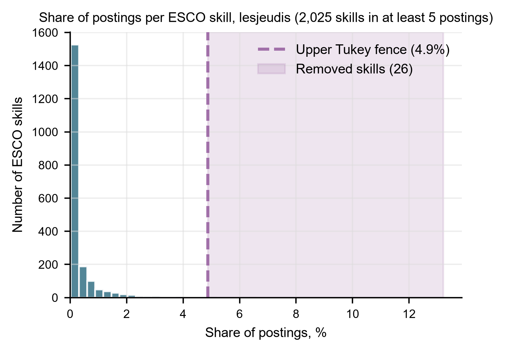

Month 4 methodology: emerging occupation clusters
Month 4 methodology: emerging occupation clusters
The aim of this part of the thesis is to:
- Use the retrieved job posting titles from the Skillab API to create embeddings for each, using multilingual-e5, which is a family of open-source text embedding models designed for cross-lingual semantic search, information retrieval, and text representation. They are built on XLM-RoBERTa architecture, and the model sized used has 560M parameters and a 1024-dimensional embedding space.
- Create clusters using HDBSCAN, a machine learning clustering algorithm that handles clusters of different shapes and densities. The primary user setting is min_cluster_size, while it also automatically flags outlier points that do not fit into any stable cluster. We will also create a two-dimensional visualisation of the occupation clusters to check whether the clustering results are reasonable, using Uniform Manifold Approximation and Projection (UMAP). As the embeddings originally 1024 dimensions, we use UMAP to represent them in fewer dimensions while attempting to preserve their local neighbourhood structure, and plot the postings on a scatter plot. We will also use K-means as a comparison, to assess whether HDBSCAN is producing useful clusters compared with a more traditional clustering algorithm.
- We will then check whether specific occupations related to deglobalization belong or form their own clusters, and record their development over quarters between 2024 and 2026. Finally, we will calculate the Herfindahl Hirschman Index (HHI)1. per region and cluster, as well as an Occupation Emergence Rate per cluster.
Data used
The data collected in this part of the study covers the periods before (defined as “baselines”) and after specific deglobalization policy events. The analysis of Month 2 (Table 1) showed that no board had an adequate number of postings prior to 2024, to be used for analysis, :
| Month | eures |
eures-esco |
kariera.gr (GR) |
lesjeudis.com (FR) |
jobbland.se (SE) |
jobs.de (DE) |
kariera.fr (FR) |
|---|---|---|---|---|---|---|---|
| 2024-01 | 1 | 0 | 0 | 0 | 191 | 0 | 0 |
| 2024-02 | 0 | 1 | 0 | 0 | 246 | 0 | 0 |
| 2024-03 | 22 | 24 | 0 | 0 | 292 | 0 | 0 |
| 2024-04 | 2 | 1 | 0 | 0 | 410 | 0 | 0 |
| 2024-05 | 36 | 22 | 0 | 0 | 2,116 | 0 | 0 |
| 2024-06 | 3 | 4 | 0 | 0 | 2,879 | 0 | 0 |
| 2024-07 | 7 | 2 | 0 | 0 | 2,060 | 0 | 0 |
| 2024-08 | 4 | 6 | 2,738 | 5,660 | 4,184 | 3,427 | 3,000 |
| 2024-09 | 6 | 5 | 5,629 | 6,649 | 10,034 | 5,632 | 27,099 |
| 2024-10 | 5 | 6 | 5,480 | 4,935 | 48,018 | 8,175 | 32,892 |
| 2024-11 | 13 | 17 | 5,593 | 3,986 | 50,097 | 6,417 | 7,043 |
| 2024-12 | 37 | 62 | 4,866 | 3,511 | 47,151 | 4,029 | 4,941 |
| 2025-01 | 270 | 495 | 7,065 | 4,191 | 53,139 | 1,690 | 6,054 |
| 2025-02 | 20 | 18 | 3,174 | 1,548 | 23,017 | 2,572 | 4,916 |
| 2025-03 | 96 | 62 | 2,884 | 450 | 10,959 | 1,691 | 523 |
| 2025-04 | 120 | 93 | 1,458 | 581 | 4,139 | 597 | 0 |
| 2025-05 | 91 | 91 | 4,219 | 2,336 | 6,210 | 0 | 0 |
| 2025-06 | 64 | 78 | 4,678 | 3,887 | 132 | 0 | 0 |
| 2025-07 | 81 | 130 | 4,097 | 800 | 460 | 0 | 0 |
| 2025-08 | 148 | 234 | 3,510 | 3,383 | 3,066 | 0 | 0 |
| 2025-09 | 937 | 1,610 | 1,703 | 3,279 | 3,968 | 0 | 0 |
| 2025-10 | 1,523 | 6,335 | 61 | 1,476 | 1,520 | 0 | 0 |
| 2025-11 | 15,811 | 23,611 | 37 | 738 | 3,618 | 0 | 0 |
| 2025-12 | 21,926 | 29,746 | 3,308 | 386 | 28,639 | 0 | 0 |
| 2026-01 | 99,039 | 130,320 | 7,112 | 250 | 48,511 | 0 | 0 |
| 2026-02 | 260,792 | 698,166 | 6,542 | 6,561 | 55,457 | 0 | 0 |
| 2026-03 | 0 | 0 | 6,953 | 768 | 62,392 | 0 | 0 |
| 2026-04 | 0 | 0 | 6,659 | 0 | 47,721 | 0 | 0 |
| 2026-05 | 0 | 0 | 0 | 0 | 53,794 | 0 | 0 |
| 2026-06 | 0 | 0 | 0 | 0 | 46,127 | 0 | 0 |
| 2026-07 | 0 | 0 | 0 | 0 | 31,166 | 0 | 0 |
| 2026-08 | 0 | 0 | 0 | 0 | 40,875 | 0 | 0 |
| 2026-09 | 0 | 0 | 0 | 0 | 595 | 0 | 0 |
Our work therefore focuses on two events for two respective boards: AccelerateEU (22 April 2026) for jobbland.se and InvestAI (11 February 2025) for lesjeudis.com. It is important to note that the postings of the individual boards are examined separately and are not merged.
Clustering Algorithm Selection and Hyperparameter Tuning
The clustering methodology was developed in two stages: 1. We first compared clustering algorithms and input representations, to identify an appropriate approach for grouping job postings. 2. Based on the results (see below) HDBSCAN was selected. We then conducted a sensitivity analysis to determine the HDBSCAN hyperparameter values that lead to the best clusters, i.e. a clustering configuration that produces coherent and interpretable groups of job postings, while avoiding too narrow definitions, as well as the exclusion of a large proportion of observations.
Generation of Title Embeddings
The initial title representations were generated using the pretrained multilingual-e5-large model (intfloat/multilingual-e5-large). The model produces a 1,024-dimensional vector for each input text; this dimensionality is the model’s output size, and it was used in its pretrained form.
The first stage of the process was to clean the job titles using a python script (script 90). This process removed employer names, location information, gender markers (such as (m/w/d)) and trailing reference codes. The resulting cleaned titles (title_clean) were stored in data/tagged/titles_<board>.jsonl. The cleaned title was then used as the embedding input (text_a) (script 92). Where a posting had no title, a title was inferred from the description, using the Qwen 2.5 7B model (script 99). A human annotator (i.e. the author) checked a sample, and it was found that 88% of the inferred titles named the same occupation as the real title, which was deemed satisfactory. The prefix query: was added to each input, as required by the model’s input convention.
Input representation encoding
The text was then encoded using SentenceTransformers, which is a Python framework built on PyTorch and Transformers for generating embeddings and computing similarity scores across text. The resulting embeddings were normalised using L2 normalization (setting normalize_embeddings=True), which scales a vector so its Euclidean norm (length) equals 1 while preserving its direction. This is because multilingual-e5 is trained so that similar texts point in the same direction; therefore, titles with similar meanings are represented by vectors pointing in similar directions. The magnitude (length) of each vector is not used in the comparison. Therefore, by normalising each vector to length 1, differences in length are removed and the dot product of two titles is equal to their cosine similarity. Similarity is therefore measured by the cosine of the angle between two vectors (“cosine similarity”). The embeddings were generated using Google Colab T4 GPU. The resulting vectors were saved as NumPy arrays (emb_<board>.npy), with one row per posting.
Two different UMAP transformations were applied to the 1,024-dimension title embeddings, serving different purposes: (a) In the clustering pipeline (script 92), UMAP reduced the embeddings to 10 dimensions, using cosine distance, n_neighbors = 30 and min_dist = 0. The reduction to ten dimensions took place in order to make density-based clustering more effective than applying the clustering algorithms that followed directly to the original 1,024-dimensional embeddings. Setting min_dist = 0 allows UMAP to place similar observations more closely together, which can make it easier for HDBSCAN to identify dense areas. (b) At a later stage, for visualisation purposes, a second UMAP transformation was applied to the original 1,024-dimensional embeddings, reducing them to two dimensions (cosine distance, n_neighbors = 30, min_dist = 0.1, random seed = 1). This transformation (implemented using script 112), was used to produce the two-dimensional map showing the named occupations and selected clusters. In other words, the ten-dimensional embeddings were transferred to the corresponding observations in the two-dimensional map and used to colour the points. Therefore the two-dimensional map does not determine or modify the clustering results: the proximity of two clusters in the visualisation is not evidence that they are similarly close in the ten-dimensional clustering space; the map is a separate, lower-dimensional representation for visual inspection only.
Comparison of input representations
Using HDBSCAN as the clustering algorithm (on the aforementioned 10-dimensional UMAP of the embeddings), we examined two input representations:
Input A uses only the cleaned job title, embedded with multilingual-e5-large (1,024 dimensions, L2-normalised).
Input D joins two additional numerical embedding vectors to the title embedding via concatenation:
- an embedding (100 dimensions) of ESCO skills extracted with the ESCOX extraction tool (Kavargyris et al. 2025), using a similarity threshold of 0.6
- an embedding (20 dimensions) of 135 Lightcast terms.
Input D is further distinguished in two versions:
Dv2 uses weights of 0.5 for both ESCOX and Lightcast;
Dv3 uses weights 0.25 and 0.25 and, in addition, removes very common skills before the concatenation. The reason is that our initial runs of inputs that included skill embeddings showed that clusters were formed around single skills which were often generic (such as “assume responsibility”, “meet commitments”, “communicate with customers” or language skills). These generic skills reveal little about the actual role, but still result to joining those postings in the same clusters. This was performed with the following steps:
For each board, we count the share of its postings in which each ESCO skill appears (script 92 and 125). Table 2 shows an example of ESCO skills for the lesjeudis board (18,625 postings). The share provided is the number of postings with the skill divided by all postings of the board, including postings without any skill; while the skill names are shortened for clarity (e.g. “innovation processes The techniques, mod…” is given below as “innovation processes”).
Table 2: Selected ESCO skills and their posting shares ESCO skill Postings Share innovation processes 2,412 13.0% cyber security 2,239 12.0% DevOps 1,621 8.7% quantum mechanics 914 4.91% provide user documentation 899 4.83% To identify which skills have unusually high occurrence, and therefore have limited discriminatory value for distinguishing job roles, we used the Tukey fence. However, plotting the distribution of skill occurrence, it was found to be right-skewed: most skills appeared in relatively few postings, while a small number appeared in a very large proportion of postings. So to calculate the high-occurrence skills, we used the upper Tukey fence of the logarithm of these shares, which is equal to Q3 + 1.5 × IQR (Tukey 1977). For this approached, the rule we followed is that a skill above the fence is considered too common to distinguish roles apart and is therefore removed from every posting’s list of skills. The fence was estimated at 4.9% for the lesjeudis board, 1.5% for jobs.de and 1.6% for jobbland. The result was that it removed 26, 31 and 56 skills, respectively.
::: {#cell-fig-tukey .cell execution_count=1}
::: {.cell-output .cell-output-stdout}
skills: 2025, median share 0.102%, fence 4.878%, removed 26:::::: {.cell-output .cell-output-display}

::: :::It should be noted that no Lightcast term was found to exceed the upper Tuckey threshold (the largest share is 4.8%, for “Supply Chain” on the lesjeudis board) and each board has only 12 to 32 distinct Lightcast terms, so the Tukey fence was applied to ESCO skills only.
The goal of the next step is to keep skills that are associated with particular types of jobs, and remove skills that appear in very different types of jobs. For this reason, we will use use the similarity between job titles as an indication of how closely related two postings are in the context of a k-nearest-neighbour graph. The k-nearest-neighbour graph creates a network of job postings, where each posting is connected to its five most similar postings, based on their title embeddings. The parameter (k) determines how many neighbours each posting considers. For our purpose, a smaller neighbourhood (lower k) makes sense because we want to assess how closely a skill is associated with the most similar job titles, rather than with a broader set of jobs. A link exists if either posting is among the other’s neighbours.
To evaluate whether a skill tends to appear in similar job postings, we decided to use the Laplacian Score(He et al. 2005). This is an unsupervised feature-selection method that scores a feature by how well its values agree with a neighbourhood graph of the samples. We chose it because we have no occupation labels (hence an unsupervised method is needed), and because it examines for each skill whether the postings that are tagged with it are close to each other in title space.
As part of this technique, for every skill and term, we score how well the set of postings that include it follow this graph. The score is low if the postings that carry the item are neighbours and about 1 if the item is unrelated to the graph. However, it is important to note that the Laplacian Score cannot remove false matches that are consistent. For example, we found that it kept “feed concrete mixer” (score 0.301), despite it being linked to irrelevant job titles between them. The explanation might be that this skill is about supplying a machine with the right materials. A sentence in a job advert, such as “supply the client with…”, “provide the necessary…” or “ensure delivery of…”, can be similar enough in meaning to cross the 0.6 threshold of the ESCOX algorithm.
Many such skills were nevertheless found to be removed using the Tukey fence.
The orignal Laplacian Score paper ranks the features rather than applying a cut-off, so we followed its protocol and compared the clustering for thresholds 0.7, 0.8, 0.9 and 1.0 on lesjeudis (silhouette, noise, seed stability). The threshold 1.0 keeps 99% of the items, because an item unrelated to the graph scores about 1. The threshold 0.8 gave the lowest noise and the highest silhouette in the UMAP space for Dv2, and it is used for both versions and all boards. This keeps 204 (Dv2) and 190 (Dv3) of the ESCO skills on lesjeudis, 130 and 114 on jobs.de, and 205 and 198 on jobbland.Regarding Lightcast, it kept 4 terms on lesjeudis, none on jobs.de and one on jobbland.
The remaining skills / terms were finally weighted with TF-IDF and reduced with TruncatedSVD, to 100 dimensions for ESCO and 20 for Lightcast. Each block was normalised to unit length, multiplied by its weight, concatenated with the title embedding (weight 1) and normalised again. A posting that loses all its items gets zeros in the skill blocks, so it is clustered on its title alone.
Results
We compared the three input cariations on lesjeudis.com with two criteria from the literature on text clustering with embeddings. The first is the silhouette (Rousseeuw 1987), computed in the space in which each input was clustered (the 10-dimensional UMAP space) and in the original embedding space. In simple terms, the silhouette measures how compact the clusters are in the space they take up.
The second is topic coherence (CNPMI), a standard semantic measure used for clusters of text (Röder et al. 2015; Grootendorst 2022). For each cluster we took the ten words with the highest class-based tf-idf score in its titles (Grootendorst 2022) and computed the mean normalised pointwise mutual information (Bouma 2009) over all pairs of these words. Each title of the board counts as one document. CNPMI is −1 when two words never occur in the same title and +1 when they always do.
| Input | Clusters | Noise | Silhouette, UMAP space / input space | Median CNPMI | Mean CNPMI, weighted by postings |
|---|---|---|---|---|---|
| A | 144 | 30.9% | 0.618 / 0.087 | −0.389 | −0.342 |
| D v2 | 142 | 20.6% | 0.735 / 0.170 | −0.485 | −0.447 |
| D v3 | 102 | 30.6% | 0.590 / 0.090 | −0.376 | −0.273 |
According to the silhouette score, input D v2 is the preferred choice (0.735 against 0.618 for A, in the UMAP space), and it also has the least noise. In input D, however, the clustering space includes the ESCO skills and Lightcast terms, so postings can be closer in the embedding space not because their titles are similar but because of their skills.
It is therefore expected that topic coherence (CNPMI), which looks only at the words of the titles, gives the opposite result: D v2 has the lowest values (median CNPMI −0.485 against −0.389 for A), which means that the titles inside its clusters share fewer words than those of A. The reason is that skills can be unreliable because of how they are extracted. The esco-skill-extractor turns each piece of a posting into a vector with a small sentence model (all-MiniLM-L6-v2) and compares it with the vector of every ESCO skill description. A skill counts as found when the similarity reaches 0.6. In the first version of input D (D v1), which had no coherence filter, this produced false matches such as the skill “feed concrete mixer” on IT consultants’ postings. This can be due to (a) generic wording, because a common sentence of a job advert such as “supply the client with…” or “ensure delivery of…” can be similar in meaning in the context of a skill description or (b) employer templates, because one sentence repeated in a group of postings, such as a company description, gives the same skill to all of them. The coherence filter in D v2 and D v3 was introduced to remove skills whose postings have unrelated titles.
Input D v3 is similar to A on both criteria (silhouette 0.590 against 0.618; median CNPMI −0.376 against −0.389; weighted mean −0.273 against −0.342) but xxxx. We therefore keep input A as the main input and D v3 as a sensitivity check.
CNPMI is negative for all three inputs. This can be explained by the fact that titles are very short documents, and the top words of a cluster are mostly alternative words for the same role (for example “buyer” and “purchasing”) or rare tokens which rarely occur in the same title. In the lesjeudis board, about one fifth of the titles (at least 21.7%) contain French, so some of the top words are French equivalents of English ones (for example “buyer” and “acheteur”). The values are therefore compared with each other and not interpreted in absolute terms. The silhouette comes from the algorithm comparison, and CNPMI from the saved cluster labels of a separate run of the same settings, so the numbers of clusters and noise differ slightly between the two (for example 136 and 142 clusters for D v2).
Clustering algorithms tested
Using the embeddings of Case A (i.e. ectracted only from the title) as input, we next compared the results of four clustering algorithms on the postings: 1. HDBSCAN with excess-of-mass (EOM) cluster selection 2. HDBSCAN with leaf cluster selection 3. k-means 4. Ward agglomerative clustering.
All methods were applied to the same 10-dimensional UMAP representations of the input embeddings, so that the results can be compared on the same dimensional space. The number of clusters was set to XXX for all algorithms, because xxxx. This provided a comparison between the methods the a similar level of cluster granularity. For the k-means algorithm in specific, we also examined five alternative values of k (25, 50, 100, 200 and 400) to investigate how the number of clusters affected the resulting silhouette scores.
The comparison was conducted on the three job-posting platforms that had already been chosen due to their data completeness over time (LesJeudis, Jobbland and Jobs.de).
Evaluation criteria
Clustering quality was assessed using the silhouette coefficient, calculated on a random sample of 10,000 postings (random seed 1). The silhouette coefficient measures how well an observation fits within its assigned cluster relative to the nearest alternative cluster. It ranges from -1 to +1, with higher values indicating better-defined cluster assignments.
For an individual observation, the silhouette coefficient is calculated as:
\[ s(i) = \frac{b(i)-a(i)}{\max(a(i),b(i))} \]
where \(a(i)\) represents the average distance between observation \(i\) and the other observations in its assigned cluster, and \(b(i)\) represents the lowest average distance between observation \(i\) and the observations in another cluster (i.e. the nearest alternative cluster).
Silhouette scores were calculated in two spaces: the 10-dimensional UMAP space, using Euclidean distance, and the original embedding space, using cosine distance. This provided two complementary assessments: the separation of clusters in the space used for clustering and the separation of the same cluster assignments in the original embedding space.
Since HDBSCAN can leave observations unassigned, the proportion of postings classified as noise was reported alongside its silhouette scores. This was important because the silhouette is calculated only for observations assigned to clusters, meaning that an algorithm could obtain a relatively high score by excluding difficult-to-cluster postings. To address this issue further, k-means and Ward were also evaluated on the subset of postings assigned to clusters by HDBSCAN EOM, allowing their silhouette scores to be compared on the same observations.
HDBSCAN EOM and leaf selection
Table 1 reports the number of clusters, noise proportion and silhouette scores obtained using HDBSCAN EOM and leaf selection across the three datasets and input representations.
Table 1. HDBSCAN EOM and leaf comparison across datasets and input representations
| Dataset | Input | EOM clusters | EOM noise (%) | EOM silhouette (UMAP) | EOM silhouette (input) | Leaf clusters | Leaf noise (%) |
|---|---|---|---|---|---|---|---|
| LesJeudis | A | 144 | 30.9 | 0.618 | 0.087 | 151 | 32.5 |
| LesJeudis | D | 136 | 21.1 | 0.735 | 0.170 | 148 | 26.5 |
| Jobbland | A | 357 | 34.3 | 0.618 | 0.071 | 391 | 40.3 |
| Jobbland | D | 263 | 20.2 | 0.707 | 0.122 | 290 | 29.1 |
| Jobs.de | A | 71 | 27.6 | 0.542 | 0.086 | 84 | 38.8 |
| Jobs.de | D | 102 | 25.2 | 0.711 | 0.163 | 109 | 28.9 |
| LesJeudis | D v3 | 101 | 29.8 | 0.590 | 0.090 | 121 | 38.6 |
| Jobbland | D v3 | 282 | 36.3 | 0.627 | 0.098 | 308 | 42.2 |
| Jobs.de | D v3 | 65 | 32.5 | 0.592 | 0.119 | 75 | 40.1 |
Note: Silhouette scores are calculated in the UMAP and original embedding spaces, respectively. Noise percentages refer to the proportion of postings not assigned to a cluster.
The comparison indicated that HDBSCAN generally achieved higher silhouette scores in the UMAP space than k-means and Ward when the latter were required to assign every posting to a cluster. However, the difference became substantially smaller when k-means and Ward were evaluated only on the postings retained by HDBSCAN EOM. This suggested that a substantial part of HDBSCAN’s advantage resulted from its ability to identify and exclude observations that did not fit sufficiently well into dense clusters.
In the original embedding space, silhouette scores were considerably lower across all methods, with all values below 0.17. The results did not establish a consistent advantage for any algorithm. This distinction was important because HDBSCAN identified clusters in the UMAP space, meaning that silhouette scores calculated in that same space were not an independent basis for establishing the occupational quality of the resulting clusters.
The comparison also showed that HDBSCAN leaf selection generally produced more clusters and a higher proportion of noise than EOM, while providing only modest improvements in UMAP silhouette scores. Across the six principal dataset and input combinations, leaf selection produced between 7 and 34 additional clusters. Its silhouette improvements in UMAP space were generally limited, while the proportion of noise increased in several cases. It was therefore retained as an alternative specification for sensitivity analysis rather than selected as the main approach.
Comparison of HDBSCAN EOM with k-means and Ward agglomerative clustering
Table 2 presents the silhouette scores for k-means and Ward clustering, using the same number of clusters as HDBSCAN EOM. The final two columns report the scores obtained when these methods were evaluated only on the subset of postings assigned to clusters by HDBSCAN EOM.
Table 2. Silhouette comparison of k-means and Ward clustering
| Dataset | Input | k-means (UMAP) | k-means (input) | Ward (UMAP) | Ward (input) | k-means (EOM subset) | Ward (EOM subset) |
|---|---|---|---|---|---|---|---|
| LesJeudis | A | 0.467 | 0.030 | 0.461 | 0.026 | 0.576 | 0.593 |
| LesJeudis | D | 0.615 | 0.118 | 0.609 | 0.115 | 0.720 | 0.716 |
| Jobbland | A | 0.438 | -0.014 | 0.433 | -0.022 | 0.577 | 0.587 |
| Jobbland | D | 0.608 | 0.089 | 0.603 | 0.090 | 0.704 | 0.703 |
| Jobs.de | A | 0.431 | 0.023 | 0.417 | 0.052 | 0.519 | 0.528 |
| Jobs.de | D | 0.539 | 0.088 | 0.537 | 0.081 | 0.638 | 0.646 |
| LesJeudis | D v3 | 0.476 | 0.058 | 0.459 | 0.055 | 0.567 | 0.581 |
| Jobbland | D v3 | 0.433 | 0.028 | 0.417 | 0.024 | 0.595 | 0.603 |
| Jobs.de | D v3 | 0.416 | 0.059 | 0.415 | 0.053 | 0.540 | 0.540 |
Note: The first four silhouette columns report scores in UMAP and original embedding spaces. The final two columns report scores in UMAP space, calculated on the subset of postings assigned to clusters by HDBSCAN EOM.
The results show that k-means and Ward generally obtained lower UMAP silhouette scores than HDBSCAN EOM when all postings were required to be assigned to a cluster. However, when evaluated on the same postings retained by HDBSCAN, the differences became considerably smaller. For example, on Jobbland D, the UMAP silhouette scores were 0.707 for HDBSCAN EOM, 0.704 for k-means and 0.703 for Ward. This demonstrates that HDBSCAN’s ability to leave difficult-to-cluster observations unassigned is an important factor behind its higher silhouette scores.
In the original embedding space, the scores were generally low, with k-means and Ward even producing slightly negative values for Jobbland A. Ward also obtained scores equal to or higher than HDBSCAN EOM on the EOM-retained postings in three of the six principal dataset and input combinations. Consequently, the original embedding-space results did not provide sufficient evidence to establish a clear advantage for HDBSCAN over the alternative algorithms.
Sensitivity of k-means to the number of clusters
A separate k-means experiment examined the effect of different values of k on the resulting silhouette scores. The five values tested were 25, 50, 100, 200 and 400.
Table 3. k-means silhouette scores for alternative numbers of clusters
| Dataset | Input | k = 25 | k = 50 | k = 100 | k = 200 | k = 400 |
|---|---|---|---|---|---|---|
| LesJeudis | A | 0.358 | 0.389 | 0.426 | 0.495 | 0.526 |
| LesJeudis | D | 0.512 | 0.497 | 0.575 | 0.622 | 0.570 |
| Jobbland | A | 0.384 | 0.400 | 0.384 | 0.420 | 0.441 |
| Jobbland | D | 0.362 | 0.413 | 0.527 | 0.610 | 0.560 |
| Jobs.de | A | 0.404 | 0.404 | 0.434 | 0.473 | 0.497 |
| Jobs.de | D | 0.440 | 0.469 | 0.536 | 0.618 | 0.615 |
| LesJeudis | D v3 | 0.408 | 0.444 | 0.474 | 0.473 | 0.455 |
| Jobbland | D v3 | 0.351 | 0.387 | 0.407 | 0.430 | 0.439 |
| Jobs.de | D v3 | 0.425 | 0.438 | 0.422 | 0.459 | 0.465 |
Note: All silhouette scores are calculated in the 10-dimensional UMAP space.
The k-means experiment did not identify a consistent optimal number of clusters across datasets and input representations. Silhouette scores generally increased with k in some configurations, while others exhibited peaks or relatively flat patterns. For input A, the scores increased with k for LesJeudis and Jobs.de, while Jobbland exhibited a comparatively flatter pattern. For input D, the scores peaked at k = 200 for all three datasets, although the difference between k = 200 and k = 400 was small for Jobs.de.
Consequently, the results did not provide a clear basis for selecting a particular number of clusters independently of the clustering algorithm. The number of clusters produced by HDBSCAN was therefore determined by its density-based clustering parameters rather than by attempting to optimise the silhouette through a predetermined value of k.
Selection of HDBSCAN Hyperparameters
Following the selection of HDBSCAN EOM, a second stage examined the sensitivity of the clustering results to the choice of two hyperparameters: min_cluster_size and min_samples.
The min_cluster_size parameter specifies the minimum number of observations required for a group to be considered a cluster. The min_samples parameter controls the density requirement for observations to be assigned to a cluster rather than classified as noise. Increasing min_samples generally makes the clustering more conservative, as a higher local density is required for observations to be considered part of a cluster.
The experiments were conducted using the LesJeudis dataset and input A, with the same input embeddings and cluster_selection_method='eom' held constant. The initial grid comprised five parameter combinations: (10, 10), (20, 10), (20, 20), (40, 10) and (40, 40), where the first value denotes min_cluster_size and the second denotes min_samples. The grid was subsequently extended to include (80, 20) and (80, 40), in order to investigate whether larger minimum cluster sizes could produce fewer, more substantial clusters.
Each configuration was evaluated using two random seeds. The resulting solutions were compared using several criteria:
- Number of clusters: to assess the overall granularity of the clustering and whether the resulting number of groups was manageable for subsequent analysis.
- Percentage of noise observations: the proportion of postings that HDBSCAN did not assign to any cluster, indicating how restrictive the density requirements were.
- Median cluster size: to assess the typical size of the resulting clusters.
- Number of small clusters: the number of clusters containing fewer than 60 postings, providing an indication of how many relatively small groups were produced.
- Relative validity: HDBSCAN’s internal density-based validity measure, used as an additional indicator of clustering quality.
- Agreement between random seeds: measured using the Adjusted Rand Index (ARI), calculated on postings assigned to clusters in both runs. An ARI of 1 indicates identical cluster assignments, while lower values indicate greater differences.
- Named-occupation coverage: an exploratory check of whether four manually identified occupation titles in the LesJeudis dataset (three related to export control and one to semiconductor occupations) were assigned to clusters rather than classified as noise.
The objective was not simply to maximise the number of clusters or minimise the proportion of noise. Rather, the aim was to identify a reasonable balance between cluster granularity, cluster size, the retention of observations, internal clustering quality and reproducibility. Particular attention was paid to avoiding an excessive number of small clusters, given the requirements of the subsequent occupational analysis.
Hyperparameter sensitivity results
Table 4 reports the results of the extended hyperparameter grid, using the second experimental run conducted on 18 November.
Table 4. HDBSCAN hyperparameter sensitivity analysis (LesJeudis, Input A)
min_cluster_size |
min_samples |
Clusters | Noise (%) | Median size | Clusters below 60 postings |
|---|---|---|---|---|---|
| 10 | 10 | 413 | 28.9 | 24 | 371 |
| 20 | 10 | 265 | 29.0 | 40 | 197 |
| 20 | 20 | 227 | 33.4 | 44 | 157 |
| 40 | 10 | 144 | 30.9 | 72 | 51 |
| 40 | 40 | 108 | 42.3 | 77 | 34 |
| 80 | 20 | 57 | 36.0 | 157 | 0 |
| 80 | 40 | 51 | 39.7 | 187 | 0 |
Note: The selected baseline configuration is highlighted. A small cluster is defined here as a cluster containing fewer than 60 postings.
The results indicated that reducing min_cluster_size substantially increased the number of clusters without producing a corresponding improvement in the proportion of observations retained. For example, with min_samples=10, reducing min_cluster_size from 40 to 20 and 10 increased the number of clusters from 144 to 265 and 413, respectively, while the noise proportion remained broadly similar (approximately 29–31%). The resulting solutions also contained a considerable number of small clusters: 371 of the 413 clusters in the (10, 10) configuration contained fewer than 60 postings.
Conversely, increasing both parameters produced fewer and larger clusters, but this came at a cost. The extended grid showed that the (80, 20) and (80, 40) configurations produced 57 and 51 clusters, respectively, compared with 144 for the baseline configuration (40, 10). However, these solutions also classified a larger proportion of postings as noise (36.0% and 39.7%, respectively) and obtained lower relative validity scores (0.205 and 0.182, compared with approximately 0.28 for the smaller configurations). Furthermore, the (80, 20) configuration exhibited lower agreement between seeds (ARI = 0.838).
Internal validity, stability and named-occupation coverage
Table 5 presents the additional evaluation measures recorded during the second experimental run, including relative validity, agreement between random seeds and the named-occupation coverage check.
Table 5. Relative validity, agreement between seeds and named-occupation coverage
Configuration (min_cluster_size / min_samples) |
Relative validity | ARI between seeds | Named titles in clusters |
|---|---|---|---|
| 10 / 10 | 0.279 | 0.953 | 2/4 |
| 20 / 10 | 0.287 | 0.945 | 3/4 |
| 20 / 20 | 0.252 | 0.963 | 1/4 |
| 40 / 10 | Not reported | Not reported | Not reported |
| 40 / 40 | 0.255 | 0.940 | 1/4 |
| 80 / 20 | 0.205 | 0.838 | 2/4 |
| 80 / 40 | 0.182 | 0.927 | 2/4 |
Note: The 40/10 baseline metrics were not reported in the second-run results for relative validity, ARI and named-occupation coverage.
The relative validity scores were generally higher for the smaller configurations, particularly (20, 10), which obtained a score of 0.287. The larger configurations (80, 20) and (80, 40) produced lower scores of 0.205 and 0.182, respectively. This provided additional evidence that the reduction in cluster count achieved through larger minimum cluster sizes came at the expense of internal density-based validity.
Agreement between seeds was relatively high for most configurations, with ARI values between 0.927 and 0.963, with the exception of (80, 20), which obtained an ARI of 0.838. This indicated that the larger configuration was less reproducible across seeds, although the other configurations also exhibited some variation.
The named-occupation coverage check did not provide sufficiently strong evidence to distinguish between parameter combinations. Only four relevant titles were available in the LesJeudis dataset, making the results sensitive to the classification of individual postings. This measure was therefore treated as descriptive rather than as a formal validation criterion.
Repeated execution and reproducibility
Repeated executions of the experimental grid also produced some differences in clustering statistics despite the use of fixed random seeds. For example, the (40, 40) configuration produced 103 clusters and 36.6% noise in the first execution, compared with 108 clusters and 42.3% noise in the second. Similarly, the (20, 10) configuration produced 259 and 265 clusters in the two executions, respectively.
These differences indicate that the results should be interpreted as approximate comparisons between parameter configurations rather than perfectly deterministic outcomes. Accordingly, the selection considered the overall patterns across configurations rather than small differences in individual metrics. The precise source of the run-to-run variation was not established.
Hyperparameter selection
On balance, the original configuration of min_cluster_size=40 and min_samples=10 was retained. It provided a reasonable compromise between cluster granularity and cluster size, without producing the excessive number of small clusters observed under lower minimum cluster sizes or the increased noise and lower internal validity associated with larger configurations.
The alternative configurations were therefore treated as sensitivity tests rather than replacements for the baseline specification. The hyperparameter experiments were conducted on the LesJeudis dataset only. Consequently, the results provide an assessment of parameter sensitivity for this dataset rather than evidence that the same relative performance holds across all job-posting platforms.
Chosen Clustering Specification
Based on the comparative algorithm assessment and subsequent hyperparameter sensitivity analysis, the final clustering configuration consisted of input A, reduced to 10 dimensions using UMAP, followed by HDBSCAN with excess-of-mass (EOM) cluster selection. The HDBSCAN parameters were set to min_cluster_size=40 and min_samples=10.
This configuration was retained because it provided a reasonable balance between cluster granularity, cluster size, the proportion of postings assigned to clusters and the interpretability requirements of the subsequent occupational analysis. The selection was therefore based on a combination of quantitative clustering metrics and substantive considerations regarding the occupational meaning of the resulting groups, rather than on the maximisation of a single internal validation metric.
References
Footnotes
The HHI (Herfindahl–Hirschman index) is a number between 0 and 1 that shows how concentrated postings are. For each region (or employer), it takes its share of the cluster’s postings, squares each share, and adds them up. It is near 0 when postings are spread over many regions and equals 1 when they all sit in one. For example, if 3 regions hold 50%, 30% and 20% of a cluster’s postings, the HHI is 0.25 + 0.09 + 0.04 = 0.38; whereas if all postings were in one region it would be 1.↩︎